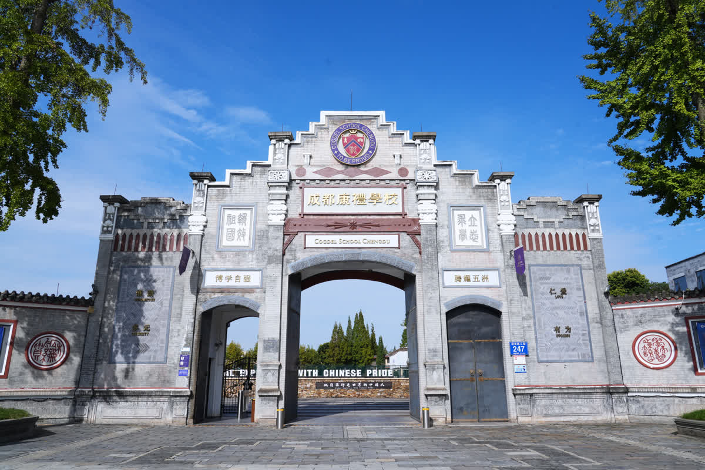
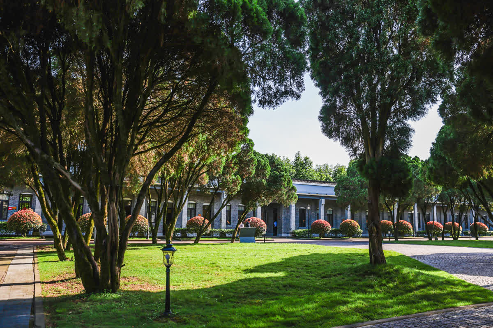
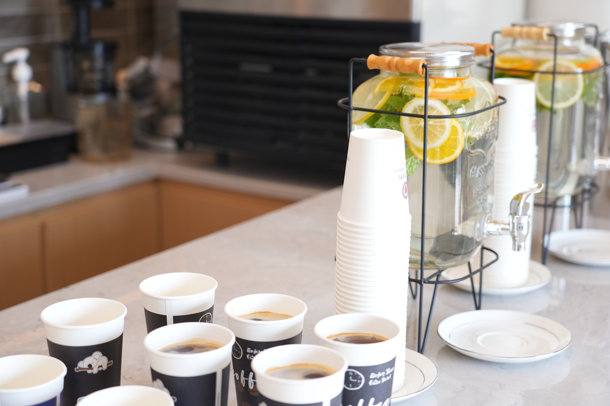
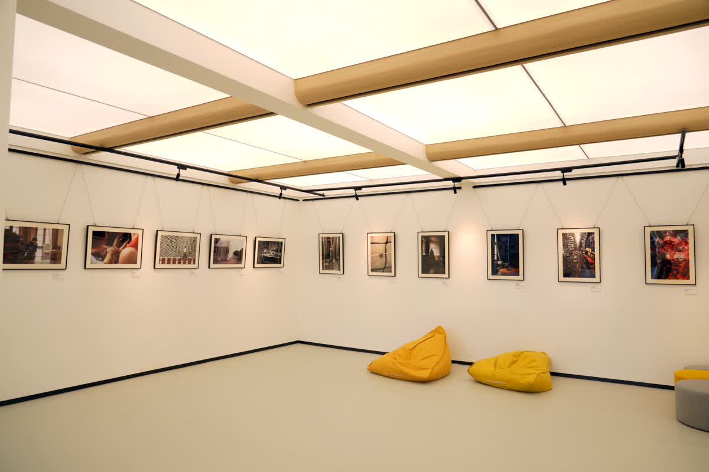
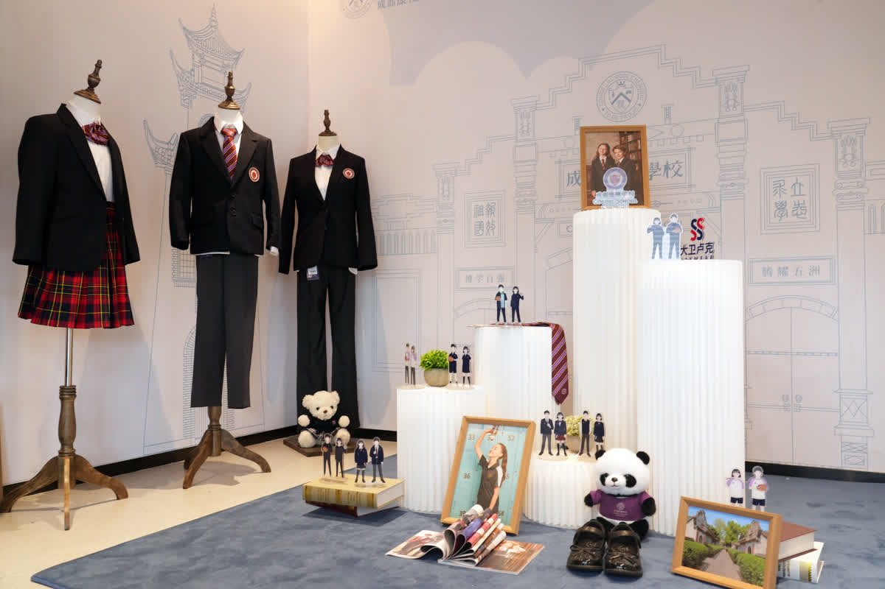
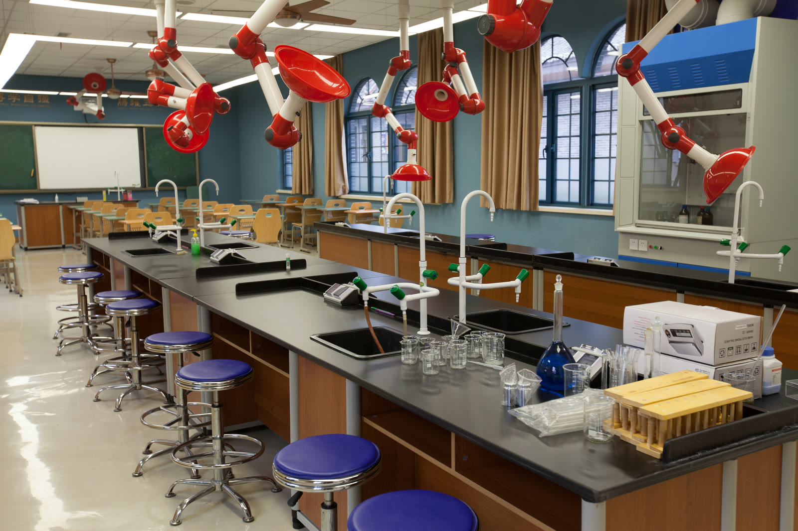
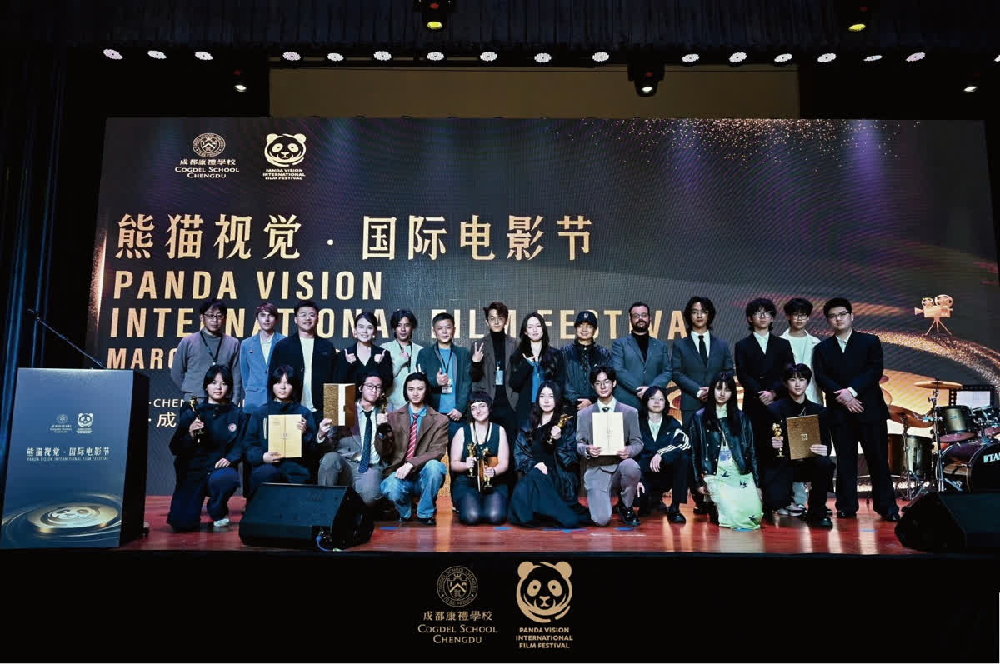
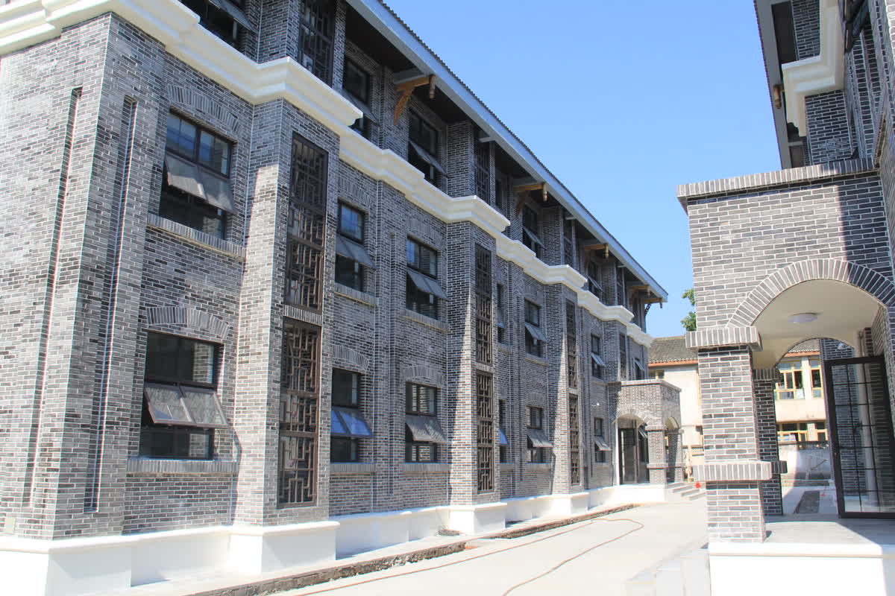
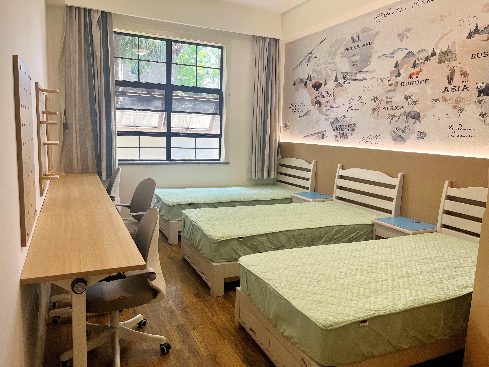
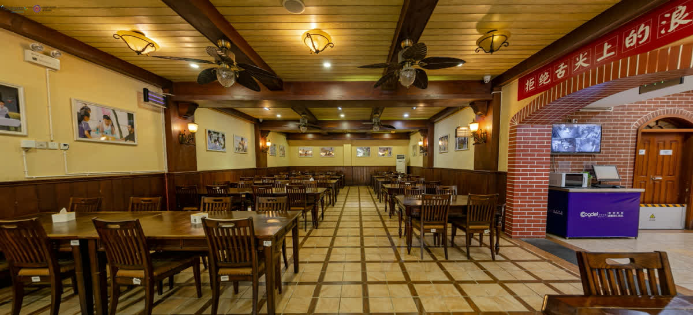

A "Love at First Sight" Reason to Choose Us
Many parents and students fall in love with the campus the moment they step through the gates -- the school calls this the "love at first sight" reason for choosing Cogdel. Education unfolds in an environment where historic architecture meets modern facilities, carrying the weight of history while embracing the energy of the future.
A Unique Campus Environment
The school is located at No.247 Section 2 Yingbin Road, Anren Town, Dayi County, Chengdu, within the nationally rated 5A Anren Ancient Town scenic area. The buildings are heritage-listed Republican-era architecture, earning the campus its reputation as "a school hidden in 80 years of scholarly heritage."


- 80 Years of Heritage Republican-Era Architecture -- 40 historic buildings arranged in harmony, each with its own unique story
- 52% Green Coverage -- Tree-lined paths, flowers in every season, squirrels and peacocks roaming freely on campus
- Nationally Rated 5A Scenic Area -- The deep cultural heritage of Anren Ancient Town provides students with a naturally immersive humanities environment




Where Heritage Meets Modernity
The most cutting-edge educational practices take place within these heritage-listed Republican-era buildings. Eighty years of history give the campus a distinctive cultural character, while modern facilities carry forward-thinking educational ideals. Students learn in an environment where they feel the weight of history and embrace the limitless possibilities of the future.
Modern Teaching Facilities
The campus is equipped with a comprehensive range of advanced facilities that support whole-person education:
- State-of-the-Art Laboratories -- Covering physics, chemistry, biology and more, supporting the 40% lab ratio in science education
- Innovation Hub (Maker Space) -- A forward-looking platform for hands-on innovation, project-based learning, and STEM exploration
- Startup Coffee Shop -- A practical space for cultivating business thinking and social skills
- Sports Fields -- Multi-sport facilities supporting parkour, rugby, badminton, volleyball, tennis, and more
- Professional Photography Studio -- Supporting film production, visual arts, and media courses
- Digital Media Creation Lab -- Equipped with professional gear for video production, graphic design, and digital media studies
- Dedicated Art Studios -- Covering five pathways: Fine Art, Architecture, Animation, Illustration, and Music

Educational Spaces for the Future
From the Innovation Hub to the Startup Coffee Shop, from the professional photography studio to the digital media creation lab, every space on campus has been carefully designed to inspire creativity and exploration. Spaces like the Innovation Hub give students permission to fail -- because without psychological safety, there can be no genuine exploration.
Boarding Life
Cogdel builds its boarding environment around the concept of "family-style care":


Boarding Facilities
Dining

- Professional Nutrition Team -- Customized menus providing balanced Chinese-Western fusion meals
- World Cuisine Themes -- Monthly world cuisine themes; weekly rotation of regional Chinese specialties
- Campus Cafe -- Serving light meals and beverages
- Local Cultural Experiences -- Regular student outings to Anren Ancient Town to experience local food culture
Medical & Wellness Support
- 24-Hour On-Campus Doctor -- Comprehensive health coverage
- Counseling Psychologist -- Supporting student mental health and developmental needs
- Dedicated Life Mentors -- One per floor, available around the clock for daily needs
- Individual Student Files -- Whole-person care mechanism; staff trained in first aid and crisis response
From the Principal
"At Cogdel, boarding is not about leaving home -- it is about entering a larger family, where there are trusting eyes, warm meals, and a light that stays on every night."